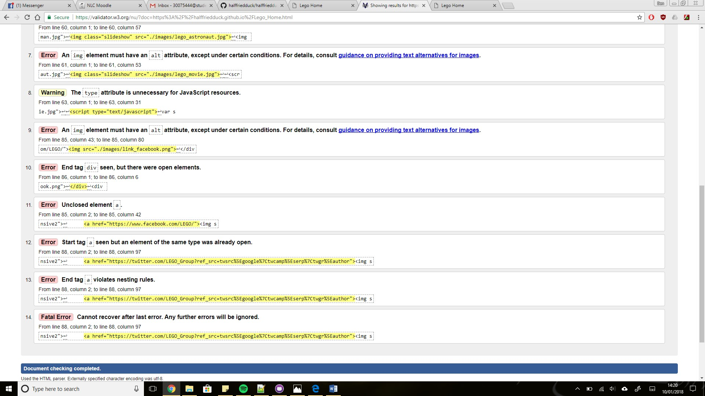

Web standards are made up of many different specifications, of which govern aspects of the internet as well as the World Wide Web. Most determine interoperability, accessibility and usability of web sites. The standards defined are not governed by only one body, there are many bodies including the World Wide Web Consortium (W3C), Web Hypertext Application Technology Working Group, and the Unicode Consortium. These “rules” are not fixed either. They are evolving as time passes to improve both the experience of the user and the overall standard of the World Wide Web. The purpose of these “rules” is to create a more unified web experience. Web sites must be made up of the correct use of HTML and must meet specific requirements in relation to accessibility and semantics. HTML is the standard markup language for creating web pages and applications. Its combination with CSS and JavaScript form the foundations of the World Wide Web. They can be found in almost all websites. HTML being the main element of website coding, has been through vigorous development and improvements. Coding in HTML can be very long and tiresome, especially with the strict syntax rules. Such strict rules include the case-sensitivity and the constant closing tags. However, these have improved over the iterations. CSS provides the designing and structuring of the sites content. And JavaScript provides interactivity for the user and website. There are many strengths to the current web practices and specifications. The current practices guide the developer to consider the disabilities and perhaps special needs of a wider range of users. This means almost all the public world wide web has options for the disabled. Also, many devices and resolutions are accounted for. Now many, if not all, websites can be viewed on a mobile device. Most have mobile versions of the site or the site is optimised for a smaller screen. The website can be scaled to fit a small screen. However, these very strengths can be its weaknesses. For the user, these standards are very helpful, but the developer has a lot to think about during the production and planning stages of the development. Adding all this functionality and extras could increase the load time for the site because there is so much more code the browser must run. In relation to the difficult HTML coding, it has its weaknesses and perhaps always will, but it will constantly be updated and improved.
There are many web standards to be adhered to. Some of the basic standards include logo being in the top left. I chose to place mine in the top right corner so that I could use a drop down menu as a navigation. As my navigation was held in a drop down, it wasn’t necessary for the main navigation to be across the top. However the drop down is in the top left corner. I included a slideshow for the homepage on an automatic cycle of images. Social media links were included but rather than being in the footer, I chose to place them below the slideshow as larger images, thus being easy to open from other devices. I have also made my website responsive so regardless of the screen size the user has a reasonably pleasant experience. With the html I have ensured I close every tag. Otherwise the page would break. I immediately declared the DocType as html. There is no inline styling. All stylings are created in an external CSS file of which is referenced immediately in the head tag. All tag names were kept lowercase which is a basic web practice. Heading tags were used instead of paragraph tags when creating heading. This made it much simpler for reading and user navigation. Every image on the site has an alt tag for accessibility and validation purposes. To the most part the structure of the web pages is very neat and easy to follow too. I validated all the html using the W3C Markup Validation Service. The following are some of the errors found by the service:
All errors were fixed and my code has been changed. The warnings were fixed too other than the ‘id name’ attribute which I thought necessary to keep in my code. The site works equally well on three browsers; Chrome, Firefox and Edge. They all view all the site features with ease and no issues arose. The site was tested on mobile version of Chrome too and no problems arose. There were many problems that came up during the creation of the site. Many of them were simple spelling mistakes or case sensitive related issues. Structuring the design proved difficult too. Many errors occurred when I tried tidying up the design. Creating tables didn’t work well enough for holding images or videos. Instead, floats and the clear fix method was used to group them together. Sizing these images proved difficult in the beginning whilst I unwittingly used inline styling. Attempting to use CSS only created more issues because of all the different styles in the CSS I had made. However, I began to reuse code as a simpler way to organise and size all my content. Utilising Googles API for Maps was easy to integrate, except for adding additional markers. The markers took extensive research to include.